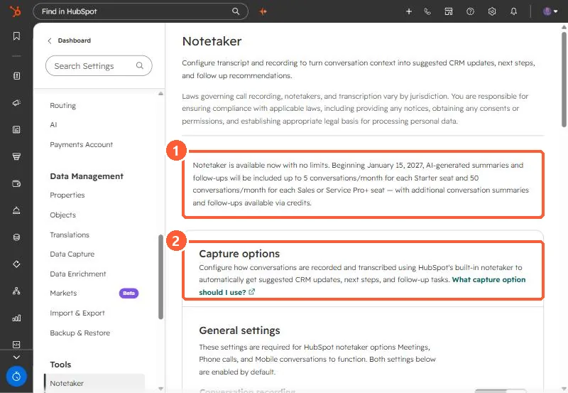

Short answer
Notetaker settings are under Settings > Tools > Notetaker. The page in my demo portal says Notetaker is available now with no limits, and that from January 15, 2027, AI summaries and follow-ups are included up to 5 conversations a month per Starter seat and 50 per Sales or Service Pro+ seat, with more through credits. HubSpot's KB also says that since April 14, 2026, each custom property in smart data capture uses 10 credits per transcript run.
1. The settings page
Notetaker turns conversation transcripts into suggested CRM updates, next steps and follow-up tasks. The page opens with a reminder that recording laws vary by jurisdiction and that notices and consent are your responsibility.


2. Credits and limits
- From January 15, 2027, per the notice in the account: 5 summarized conversations a month per Starter seat, 50 per Sales or Service Pro+ seat, more via credits.
- Smart data capture: each custom property costs 10 credits per transcript run. One transcript on five custom properties is 50 credits. Default properties are the cheaper place to start.
3. What to switch on
Under transcription and analysis you choose which conversation types to capture: meetings, phone calls, and in-person conversations (some of these are betas). If you already use a third-party recorder, HubSpot's comparison suggests keeping it when recordings also need to go elsewhere.